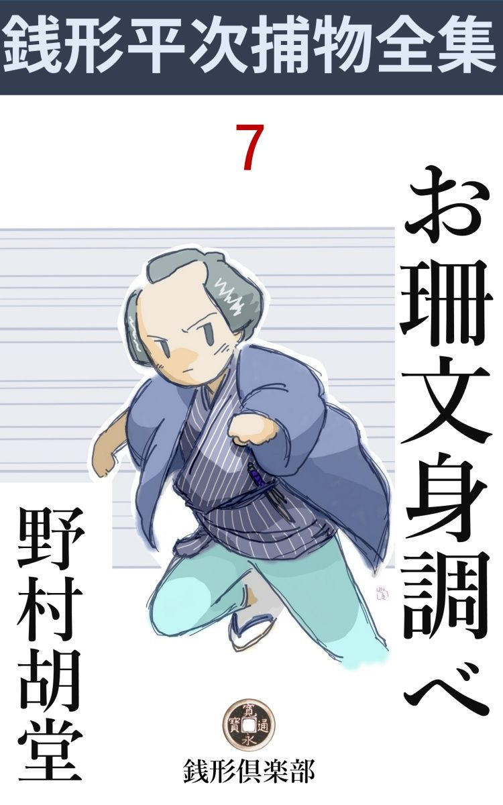
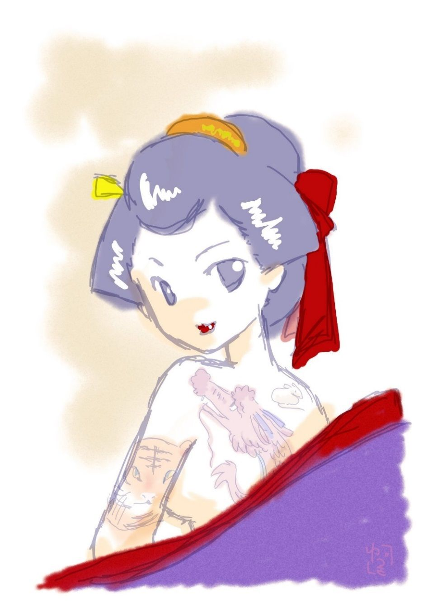

| お珊文身調べ: 銭形平次捕物全集第７話 (銭形倶楽部) | |
| 野村胡堂 | |
| ZENIGATA CLUB (2018) | |

一
「やい、ガラッ八」
「ガラッ八は人聞きが悪いなア、後生だから、八とか、八公とか言っておくんなさいな」
「つまらねエ見得 を張りゃがるな、側に美しい新造でもいる時は、八さんとか、八兄哥 とか言ってやるよ、平常 使いはガラッ八で沢山だ。贅沢を言うな」
「情けねえ綽名 を取っちゃったものさね。せめて、銭形の平次親分の片腕で、小判形の八五郎とか何とか言や------」
「馬鹿野郎、人様が見て笑ってるぜ、往来で見得なんか切りゃがって------」
「ヘエ」
捕物の名人、銭形の平次と、その子分ガラッ八は、そんな無駄を言いながら、浜町河岸を両国の方へ歩いておりました。
逢えばつまらない無駄ばかり言っておりますが、二人は妙に気の合った親分子分で、平次のような頭の良い岡っ引に取っては、少し脳 味噌 の少ない、その代り正直者で骨惜しみをしないガラッ八位のところが、丁度手頃な助手でもあったのでしょう。
「ところで、八」
「ヘッ、有難てえことに、今度はガラ抜きと来たね。何です親分」
「今日の行先を知っているだろうな」
「知りませんよ。いきなり親分が、サア行こう、サア行こう------て言うから跟 いて来たんで、時分が時分だから、大方『百尺』でも奢 って下さるんでしょう」
「馬鹿だね、相変らず奢らせる事ばかり考えてやがる------今日のはそんな気のきいたんじゃねえ」
「ヘエ------そうすると、何時 かみたいに、食わず飲まずで、人間は何里歩けるか、お前に試 させるんだ、てな事になりゃしませんか」
「いや、そんな罪の深いのじゃないが------変な事を聞くようだが、手前 、身体を汚 したことがあるかい」
「身体を汚す？」
「文身 があるかということだよ、------実は今日両国の種村 に『文身 自慢 の会』というのがあるんだ」
「ヘエ------」
「これから覗いて見ようと想うんだが、蚤 が螫 した程でもいいから、身体に文身 のない者は入れないことになっている」
「それなら大丈夫で」
「あるかい」
「あるかいは情けねえ、この通り」
袷の裾を捲って見せると、成程、ガラッ八の左の足の踝 に筋 彫 で小さく桃 の実を彫 ったのがあります。
「ウ、フ、------その文身 の方が情けねえ」
「そう言ったって、これでも蚤 の螫 した跡よりはでかいでしょう。------一体そんなことを言う親分こそ身体を汚したことがありますかい」
「真似をしちゃいけねえ」
「何べんも親分の背中を流して上げたが、ついぞ文身 のあるのに気が付いたことがねえが------」
「そりゃア、手前 がドジだからだ、文身 は確かにある」
「ちょいと見せておくんなさい」
「往来で裸になれるかい、折助 やがえんじゃあるまいし」
「見て置かねえと、何とも安心がならねえ。向うへ行って木戸でも衝 かれると、銭形の親分ばかりじゃねえ、この八五郎の恥だ」
「余計な心配 だ」
無駄を言ううちに、両国の橋詰、大弓場の裏の一郭 の料理屋のうち、一番構えの大きい『種村 』の入口に着きました。
「入らっしゃいまし」
「銭形の親分がお出でだよ」
「シッ」
大きい声で奥へ通すのを、平次は半分目顔で押えました。種村の前に世話人が四五人、怪し気な羽織などを引っ掛けて、一々出入りの人の身体を検 べて、手形 代 りに文身の有無を見ておりますが、平次は顔が売れているせいか、不作法な肌を脱ぐ迄もなく、その儘木戸を通されて、奥へ案内されたのです。
川に面した広間を三つ四つ打 っこ貫 いて、いかにも文身 自慢らしいのが、もう五六人も集まっておりますが、平次は別段その中から人の顔を物色するでもなく、
「親分、石原のが来ていますぜ」
と袖を引くガラッ八を目で叱って、隅っこの方へ神妙に差し控えました。
二
文身 というのは、もとは罪人の入墨 から起ったとも、野 蛮 人 の猛獣 脅しから起ったとも言いますが、これが盛んになったのは、元禄 以後、特に宝暦 、明和、寛政 と加速度で発達したもので、平次が活躍して来た、寛永 から明暦 の頃は、まだ大したことはありません。
図柄でもわかる通り、大模様の文身 の発達したのは、歌舞伎 芝居や、浮世絵 の発達と一致したもので、今日残っている倶梨伽羅紋々 という言葉は、三代目中村歌右衛門が江戸に下 って、両腕一パイに文身 を描いて、倶梨伽羅太郎を演じてから起ったことだと言われております。
この物語の時代には、文字や図案めかしい簡単な文身が、漸く絵に進化しただけのことで、まだ、大模様やボカシ入や浮世絵風の精巧 な図柄はありません。しかし珍らしいだけに、世の中の好奇心の方は反 って旺 んで、こんな会を催 すと、江戸中の文身自慢は言うに及ばず、蚤 の螫 した跡のような文身を持っている人間までが、見物かたがたやって来るという騒ぎだったのです。
やがて定刻の未刻 が遅れて、申刻 までに集まった者が九十八人、それに一々籖 を引かせて、番号順に肌を脱いで、皆んなに見せなければなりません。第一番は鳶 の者らしい若い男で、胸ヘヒョットコの面を彫って、背中へはおかめの面が彫ってあります。まことにとぼけたもので、相当手がこんでおりますから、その時代の人には珍らしく、ワッと褒め言葉が掛りました。
次に出たのは、中間者らしい三十男。
「真っ平御免ねえ」
クルリと尻をまくると、両方の尻 に蛙 となめくじを彫って犢鼻褌 の三つの上に、小さく蛇がとぐろを巻いております。
第三番目に出たのは、背中へ桜の一と枝に瓢箪 、寛政天保以後のように手のこんだ文身 ではありませんが、これもその時分の人の眼には、相当立派に映 ります。
こうして九十八人裸にして押し並べ、それへ世話人が等級を付けて、第一等には白米が一俵、第二等には反物一反という工合に褒美を出す仕組み------その後、文化八年に一度、天保の御 改 革 に一度、文身 御法度 になりましたが、大体この競技会の方は、維新近くまで頻繁 に催されましたから、年を取った方で、今に記憶している方も少なくないことでしょう。
ガラッ八の踝 の桃などは、あまりケチなんで吹き出させてしまいましたが、不思議なことに銭形平次の文身 は一寸当てました。肌を押し脱ぐと、背筋を真ん中にして、左右へ三枚ずつ、真田 の紋 のように、六文銭の文身、これは何となく気がきいておりました。
さて、いよいよ九十八人全部裸体 になってしまって、この日の一等は、胸から背へかけて、胴一杯に、狐 の嫁入 を彫った遊び人と、背中一面に大津絵 の藤娘 を彫った折助とが争うことになりましたが、いよいよこれが最後という時、
「あっしのも見ておくんなさい」
パッと着物を丸めて、満座の視線の中へ飛込んだ男があります。
「何だ、無疵 の身体じゃないか。色が白いだけじゃ通用しねえ、退 いた退 いた」
世話人がかき退けるようにすると、
「俺の文身はこの下なんだ、諸人にひけらかすような安い絵柄 じゃねえ」
白木綿を一反も巻いたろうと思う新しい腹巻を、クルクルと解くと、その下から現われたのは真っ白な下腹部を三巻半も巻いて、臍 の上へ鎌首 をヒョイともたげて、赤い焔 のような舌を吐 いている蛇の文身 。
「あッ」
九十八人の文身自慢で集まった人達も、思わず感歎の声をあげました。
見ると、白皙 長軀、浪裡 の張順 を思わせるような好い男、一とわたり、一座の騒ぎ呆れる顔をたそがれの色の中に見定めると、腹巻をクルクルと巻き直して、丸めた着物を小脇に掻い込むと、
「御免よ、あっしは忙しい身体なんだ。白米は後から貰いに来るぜ」
「あッ」
「待ちな」
と言う声を後に二階の縁側の欄干 を越えると、庇 を渡って、腹ん這いに雨 樋 に手が掛りました。
「御用ッ」
続いて飛付いたのは、先刻から虎視 眈々 として、一座をねめ廻していた石原の利助、縁側へ飛出して、曲者の後ろから欄干を越えようとする前へ、
「ちょいと親分、私の文身 も見てやって下さいな」
と立ち塞 がった者があります。
「えッ、邪魔だッ」
「あれさ、石原の親分。あんなヒョロヒョロ蛇より、もっと面白いものをお目にかけようじゃありませんか」
絡 み付いて、利助を引戻したのは、この店の女中とも、客ともつかぬ、変な様子をしておりますが、二十二三の滅法美しい女。
「えッ何をしやがるんだ。手前 のお蔭で、大事な捕物を逃したじゃないか」
女を突き飛ばした利助。同じく屋根を渡って、下へ飛降りましたが、ほんの暫く手間取るうちに、怪しい男はどこへ逃げたか、影も形もありません。
一方利助に突き飛ばされた女は、起き上がると思いの外ケロリとして、
「刺青 がありさえすりゃ、女だって構やしませんわねエ」
少し媚 を含 んだ調子で、世話人の方へやって来ました。
「そりゃいいとも、お前さんを入れて丁度百人だ。皆んなこうして薄寒くなるのに、裸になって待っているんだからお前さんにも肌抜 ぎになって貰わなきゃならないが、承知だろうな」
「そんな事は何でもありゃしません。なアに銭湯へ行ったと思や------」
女は自分を励 ますようにそう言いながら、それでも少し含羞 む風情で、肌を押し脱ごうとしました。
二百の瞳が、好奇心に燃えて、八方からチクチクするほど見張っている中、たそがれかけたとは言っても、まだ充分に明るい川添の広間で、不思議な女は、サッと玉の肌をさらしたのでした。
「あッ」
百人が百人、感嘆の声をあげたのも無理はありません。白羽二重に紅を包んだような、滑 かな美しい肌に、彫りも彫ったり、
頸筋 に鼠、左右の腕に牛と虎、背に龍と蛇、腹に兎と馬------
上半身に十二支 の内、子 、丑、寅、卯 、辰、巳 、午 の七つまで、墨と朱の二色で、いとも鮮 かに彫ってあるのでした。
女はさすがに身を恥 じて、二つの乳房を掌 に隠し、八方から投げかけられる視線を痛そうに受けて跼 りました。
丁度そこへ、石原の利助は、広い梯子段を二つずつ飛上がるようにやって来たのです。
「女はどこへ行った。余計な事をしやがるんで、到頭曲者を逃がしてしまったぞ」
「ここにいるよ、石原の親分」
「あッ」

利助もさすがに立ちすくみました。息せき切って飛込んだ鼻の先へ、匂うばかりに半裸体の美女、しかも、その上半身には、十二支の内、七つまで、羽二重に描いた藍絵 のように見事な文身がしてあるのです。
「お前は何だ」
「女よ------少しお転婆 だけれど」
「その文身 は？」
「御覧の通り十二支さ、子 から午 まで、あとの五つを見たかったら面 を洗って出直してお出で」
「何だと、女」
女はそう言ううちにも、肌を入れて前褄 を直しました。
「反物は私が貰ったよ、皆さん左様なら」
小腰を屈めて、滑るように出ようとすると、
「待て待て、お前は先刻の野郎の仲間だろう、叩けば埃 の出そうな身体だ。番所までちょっと来い」
と追いすがった利助、先へ廻って大手を拡げます。
丁度、その時でした。
「あッ、俺の紙入れがない」
「俺の羽織がねえぞ」
「大変、着物がなくなった」
という騒ぎ、九十八人悉く裸体になっているのですからその被害は大変です。
泥棒は多分、先刻の蛇の文身 の男の騒ぎから、引続いて女の文身の騒ぎの間に仕事をしたのでしょう、全然 裸にされたのが二十二三人、あとの七十何人も何かしら奪られない者はない有様です。
三
「親分、一体ありゃどうしたことです。九十何人裸にされるのを、銭形の親分が黙っていると言う法があるものですか」
とガラッ八、種村 の騒ぎを後にしての帰り道、あまりの事に平次に食ってかかりました。
「ハッ、ハッハッ、お前 もそう思うか、いや面目次第もないと言いたいが、実は少しばかり心当りがあって、多分あんな事になるだろうと思っていたんだ」
「ヘエ------」
「だから、手前 にも着物や持物に気を付けろと言ったじゃないか。それに、人の言うことを空耳 に走らせるから、平次の子分のガラッ八ともあろうものが、財布を盜まれるようなへまをやるんだ」
「まさに一言もねえ、あの中で一品 も盗られねえのは親分だけでしょうよ。石原の親分が、煙草入れをやられたのは大笑いさ」
「馬鹿野郎、余計な事を言うな」
「ヘエ------、それはそうと、石原の親分が縛って行った、あの綺麗な年増が、矢張り曲者でしょうかね」
「そんな事がわかるものか、俺は小泥棒を挙げに行ったんじゃねえ。十二支組 の残党 が、何人来るか見に行ったんだ」
「えッ」
「お前も知ってるだろう。一頃江戸を荒し廻った十二支組、元は弱い者いじめをする悪侍やならず者を懲 すつもりで、十二人の仲間が、銘々 の干支 に因 んで、身体に十二支を一つずつ文身したんだが、だんだん仲間に悪い奴が出来て、強請 、かたり、夜盗、家後切 から、人殺しまでするようになり、十二人別れ別れになってしまったという話はお前も聞いている筈だ」
平次が案外シンミリ話し出したので、
「ヘエ------、二三年前に、そんな噂がありましたね」
ガラッ八も引入れられて、真面目に受答えをします。
「ところが近頃妙なことがあるんだ」
「へエ------」
「ちょいちょい人殺しがあるが、検屍 に立会って見ると、それが大抵 十二支のうちの一つを、身体のどこかに彫 っているんだ」
「ヘエ------」
「どうだ、この謎は解るかい」
「いいえ」
「感心したような顔をするから、解ったのかと思うと、何だ」
「叱ったっていけませんよ」
二人はそんな話をしながら、平次の家へ帰って来ました。
銭形の平次も、全くこの時ほど迷ったことはありません。近頃頻々 と行 われる、性 の悪い押込、強盗、家後切 は、どう考えても一二年この方のさばり返った十二支組の仕業に相違ありませんが、その十二支組の仲間と思われるのが、斬られたり、絞 られたり、水へ突っ込まれたり、この間から五六人も死骸になって現われたのですから、十二支組が仲間割れしたか、それとも、第三者で義憤の士がそっと十二支組を片付けているとでも思わなければなりません。
『文身 自慢の会』に、十二支組の仲間らしいのは、蛇の文身の男より外には、一人も来た様子はありません。すると、あの上半身に十二支のうち七つまで彫った美女、あの石原の利助に縛られて行った女------というのは何だろう。
平次は腕を拱 いて考え込んでしまいました。
「銭形の親分、ちょいとお顔を拝借さして下さいませんか」
磨き抜いた格子戸を開けて、慇懃 に小腰を屈めたのは、石原利助の子分で、清次郎という中年男、年は平次より大分上でしょうが、岡っ引の子分よりは商人と言った感じのする、目から鼻へ抜けるような性 の男です。
もっとも頭の良い平次には、少し勘定の合わないガラッ八が丁度いい相棒であったように、石原の利助のような、年を取った伝統主義の岡っ引には、こうした世才に長けた子分も必要だったのでしょう。
「お、清次郎兄イか、用事は何だ」
と平次。
「大変なことが起りました。ちょいと親分に八丁堀までお出になるように------と、笹野の旦那樣のお言葉添で御座います」
藍微塵 の七三に取った裾 を下ろして、少し笑まし気に傾 けた顔は、全く利助の子分には勿体ない人柄です。
「どうしたというんだい」
「ヘエ------、その、種村で捉 まえた女を伴れて来て、改めて見ると、文身 が半分消えちまったんで」
「あ、そんな事か」
「親分はもう御存じで------」
「知ってるわけじゃないが、大方そんな事だろうと思ったよ。実は俺もその術 を用いたんだ。背中へ藍墨 で、六文銭を描 いて行ったが、濡れ手拭 で拭 くと、綺麗に消えるよ」
「へエ------」
「すると親分の文身はペテンだったんですね」
とガラッ八。
「当り前さ、俺は親から貰った生身 を汚すことなんか大嫌いだよ」
「へエ------」
二人の子分は全く開いた口が塞 がりませんでした。
「すると、あの女は、何の目当で、文身なんか描いたんでしょう？」
と清次郎、これは成程ガラッ八よりは事件の急所を知っております。
「それが解ってしまえば何でもないんだが、まだ少しばかり解らないことがある------、笹野の旦那のお言葉なら、行かないわけには行くまいが、俺はもう少し考えを纏 めたいことがあるんだ。すまないが清次郎兄イは、家の八の野郎を伴れて、一足先に行って見てはくれまいか」
「ヘエ------」
「それから念のために言って置くが、女の身体を濡 れ手拭でよく拭いた上、髪を解いて頭の地を見てくれ。頭の地に何にも変ったことがなきゃア、あの女に用事はないが、万一あの頭に曰 くのある女なら、逃がさないようにって、石原の兄イヘそう言ってくれ」
「ヘエ」
四
二人の子分------清次郎とガラッ八は宙を飛んで八丁堀へ駆け付けました。
与力、笹野新三郎の役宅へ飛込んで見ると、女はまだ町奉行所には送らず、庭先に筵 を敷いて、裸 蠟燭 の下で、身体を拭かれております。
「不届きな女だ。文身 なんぞ描 きゃあがって、なんて事をするんだ」
四十を越した石原の利助が、濡れ手拭で、若い女の肌を拭いているのは、あまり結構な図ではありません。
後ろ手にほんの形ばかり縛られた女は、灯影に痛々しく身をくねらせて、利助の荒くれた手に、遠慮会釈もなく凝脂 を拭かせております。
左には、瞬 く赤い灯、右上からは、青白い月、女の顔も肌も、二色に照らし分けられて、その美しさは言いようもありません。赤い灯に照された方は、軽い苦悩に引歪 んで、少し熱を帯びたように見えると、青い月に照された方は、真珠色に光って、深沈 としてすべての情熱が淀 んで見えます。
笹野新三郎は、さすがに見るに忍びないか、面 を反けて月を眺めております。小者、折助手合は、物の隅、建物の蔭などから、好奇に燃ゆる眼を光らせて、この半裸体の女の、不思議なアク洗いを見物しておりました。
「恥っ掻きな女だ。何だって又、こんな馬鹿な事をしたんだ。早く言うだけの事を申上げてしまって、旦那樣の御慈悲を願え」
「------」
「お前は、あの蛇の文身の男を知っているだろう、あれは十二支組の者と睨んだが、どこにいる何と言う者だ」
「------」
「フーン、物を言わないつもりだな、それもよかろう。自慢じゃねえが、俺は少しばかり腕が強いんだぜ。幸 いお前の文身 を洗い落す序 に、一皮剝 いでやろうじゃないか、石原の利助を三助にするなんざア、お前に取っちゃ一代のほまれだ」
利助の左の手が女の丸い肩に掛ると、右手に持った濡れ手拭が、恐ろしい勢いで女の背から、肩から、腕を摩擦 し始めました。
「あっ」
身をねじ曲げて、もがく女。
「えツ、動くと当りが強いぞ」
ピシリと肩に鳴る利助の掌 。
女の肩から腕から背へかけての皮膚 ------羽二重のような美しい皮膚------は、利助の恐ろしい力に擦 り剝 かれて、見る見る血がにじみ出して来ました。
「ウーム」
強情に堪える唇から、セイセイ漏 らす息に伴 れて、破れた笛を吹き続けるような、無慙 な悲鳴が、ヒー、ヒーと断続します。
「あ、これ利助------」
新三郎は見兼ねて手を挙げましたが、
「旦那、放って置いて下さい。こうでもしなきゃア、素直に口を開く女じゃありません。------野郎、黙って見ていずに、塩 でも持って来い」
利助は、振り返ってもう一人の子分にそんな事を言います。
丁度そこへ、ガラッ八と清次郎が飛込んで来ました。
「平次親分は後から参りますが、その前に女の髪を解いて頭の地を見て下さいって言いましたよ。頭の地に何にもなきゃア、唯の女だが、何か曰 くがありゃ大事な女だと言いましたよ」
とガラッ八、自分の親分は予言者のように心得ているだけに、こう言う声も何となく誇 らしく響きます。
「よしッ」
利助は案外素直に答えて、女の乱れかかった髪の中から、元結 を探しました。子分に鋏 を持って来さして、嫌がるのを無理に切ると、丈なす黒髪が、サッと手に絡 んで水の如く後に引きます。
「えッ、ジタバタしたってどうにもなる場合じゃねえ、静かにしろ」
女の頭を膝の間に挟 むように、乱れ髪を掻き分けて、蠟燭 の灯を近づけた利助、何を探し当てたか、
「あッ」
とたじろぎました。とたんに、蠟燭が斜 になって、蠟涙がタラタラと女の頬へ。
女は熱いとも言わず、凄婉 な瞳を挙げて、世にも怨 めしそうに、利助の顔を見上げました。
「どうした利助」
新三郎も思わず縁側から降り立ちました。蠟燭の灯を中心に、女の頭の上に顔を集めると、濃い黒髪の地に、藍 色 に描 かれたのは、紛 れもない一匹の鼠の文身 。
「お、お」
驚く新三郎の顔へ正面 に、
「馬鹿にしちゃいけねえ、十二支組のお珊 姐御 だ。臭い息なんか掛けると罰が当るよ」
桃色の啖呵 が、月下へ虹の如く懸 ります。
五
その晩、銭形の平次が八丁堀へ駆け付けた時は、笹野新三郎の役宅は上を下への大騒動でした。
十二支組の女首領で、頭の地へ鼠の文身をしているお珊 が誰の手を借りたか、見事に縄を切って逃げ出してしまったのです。
「平次、遅かった。大変な事になったぞ」
と笹野新三郎。さすがに役目の手前、奉行所へ送らずに自分の役宅 から逃げられたでは申訳が立ちません。
「旦那、あの女が十二支組のお珊 とわかれば、かえって筋が判然 して来ました。御心配には及びません」
平次は大して驚いた様子もなく、いつもの平静な調子で、お珊が脱 けたという縄の切目などを見ております。
「お前は何も彼も判っているようだが、少し話してはくれまいか」
「ヘエ------、何にも判っているわけじゃ御座いませんが、これだけは確 かで御座います、十二支組の残党で、生き残っているのが、鼠の文身をしているお珊と、蛇の文身をしている巳之 吉 と、猪 の文身をしている亥太郎 と三人だけですが、その三人が、何か命がけの争いをしているらしゅう御座います」
「------」
「兎に角、お珊の隠れ家だけでも、直ぐ突きとめて参りましょう」
「どこへ行くつもりだ」
「なアに、あれだけの十二支を女の肌に描くのは、絵にしたって心得がなくっちゃ出来ません。あっしの背中へ六文銭を描いてくれた、人形町の彫 辰 の顎 を探ったら、大方女の住家の当りが付きましょう、御免」
平次はフラリと八丁堀の役宅を出ました。人形町までは、若い平次の足では本当に一と走りですが、彫辰へ行って聞いて見ると、さて、思ったように簡単には埒 があきません。
「そんな新造 が来ましたよ。親方が六文銭を描かせて、お帰りになった直ぐ後でしたが、何でも、お茶番をやるんだから、腰から上へ、七つだけ十二支を描いてくれ------とこう言う注文じゃありませんか、断る筋のものでもありませんから、二た刻ばかりかかって念入りに描いてやりましたよ、------町処は知りません、あんまり綺麗な女だからって、若い者が後で騒ぎましたが、この辺で見たことのない女で探しようがありません。だがね、親分、絵を描いただけでさえ、あんなにいい心持なんだから、こっちから金を出しても、あの羽二重のような肌へ、存分 な図柄 で彫 って見たいと思いましたよ」
彫辰はこんな事を言いながら、名人らしく、蟠 りもなく笑っております。
少し大きい口を利いて、笹野新三郎に別れて来た平次は、暫く去りも敢 えず、彫辰の戸口で唸 っておりました。
六
話は少し前後しますが、誰やらに縄を切り離されて、そっと物置から連れ出されたお珊 、少し痛む身体を我慢して、導 かれるままに、そっと裏門を抜け出しました。ほんの一二町行くと、とある路地から、小手招きする者があります。疲 れ果てたお珊は、それを疑う気力もなく、フラフラと入って行くと、突き当りは、一寸したしもたや、開け放したままの入口を入ろうとすると、後ろからパッと飛付いて横抱きにしたものがあります。
「あッ」
と驚く隙 もありません。漸 く解いてもらった縄をもう一度掛け直したばかりでなく、今度は念入りに猿轡 まで噛ませて引摺り上げます。こんな事をする位なら、最初から縄付のまま引張り出して来れればいい筈ですが、それでは人目に立つとでも思った細工でしょう。
奥へ担 ぎ込まれて、投り出すように引据えられたお珊 、思わず四方 を見廻すと、目の前に坐っているのは細面に青 髭 の目立つ、一寸凄い感じのする若い男。
「お珊、久し振りだなア」
少し脂下 りに銀煙管を噛んで、妙に含蓄 の多い微笑を送ります。
「あッ、お前は亥太 ------」
驚くお珊、こう言ったつもりですが、猿轡 を噛まされておりますから、もとより声は出ません。恐ろしい苦痛を忍んで、僅かに負けじ魂の眼を光らせます。
「ウ、フ、思い出したか。どうだお珊、お前と俺との間には、まだ済まない勘定がある筈だ。今晩は一と思いにそれを決めようと思って伴 れて来たんだ。猿轡を噛ませちゃ気の毒だが、大きい声を出されると厄介だ。少しの間我慢をしてくれい？ 何？ お前は怒っているのか、------ハ、ハッハッ、猿轡が気に入らないんだろう、よしよし解いてやる。その代り、間違っても大きい声を出すと、一と思いに芋剌 しだよ」
亥太郎はそう言いながら、立ち上がってお珊の猿轡を解きました。もっとも、同時に脇差を一本、縛られたままのお珊の前へ置くことを忘れるような男ではありません。
「さア、これでよかろう。兎に角、あの八丁堀の組屋敷からお前を助けて来たんだ。俺はお前のためには恩人だ、少しは素直に言うことを聞いてくれるだろうな」
周囲 には誰もいません。親分に遠慮して皆な外へ出てしまったのでしょう。亥太郎の執念深そうな青い眼だけが、お珊の美色に絡 み付くように、その顔から、頸筋 から、縛られた胸を見詰めております。
「お珊 、手っ取り早く言おう、俺とお前は昔の仲間、三年前に別れ別れになって、今は十二支組もあるわけはねえが、俺はどうもお前 が忘れられねえ------内々様子を探ると、お前は巳之吉 と夫婦みたいに暮しているようだが、そりゃお前悪い了簡 だぜ。巳之はあれから身を持ち崩 して、泥棒、家後切、人殺しまでやるそうだ。言わば十二支組の面汚 しさ。そんな悪い人間はあきらめて、俺のところへ来るがいい、近頃商法が当って、金も大分出来たから、お前に不自由させるようなことはねえつもりだ」
「お黙りッ」
お珊 はたまり兼ねてこう言いました。
「何？」
「黙って聞いていりゃ何だとえ、巳之 さんは泥棒や人殺しをするから、別れろッて、------馬鹿も休み休みお言いよ、泥棒や人殺しはお前の方じゃないか。その上、昔の十二支組の者が、自分の素姓 を知っているのが恐ろしさに、お前は、仲間の者を片ッ端から殺して歩くって言うじゃないか。誰がそんな鬼のような奴の言うことを聞くものか。私は十二支組の大 姐御 でお前は一番の新米の亥太郎じゃないか、馬鹿も休み休み言わないと承知しないよ」
「少し声が高いぞ女、これが見えないか」
亥太郎はドギドギするのを取上げて、お珊の胸ヘピタリと付けました。
「さア、殺しておくれ、殺されたって、お前なんかの------」
半分言わせず、亥太郎は飛付くように、もう一度猿轡 を噛ませました。
「えッ、やかましい女だ。もう少し小さい声で物を言え、野中の一軒家じゃねえぞ」
「------」
「暫く考えさせてやる。明日になっても強情を張ると、お前ばかりか巳之吉の命はねえぞ」
「------」
「俺は彼奴 の巣を見届けているんだ。ちょいと笹野の旦那に教えてやりゃ、獄門 台 に上る野郎だ」
お珊の美しい眼が、深怨 と憤怒に燃えるのを亥太郎は面白そうに何時 までもいつまでも眺めております。
七
「親分、判った」
その翌日の夕刻、ガラッ八は転 がるように平次の家へ飛込んで来ました。
「何が判った」
「情けねえな親分、しっかりしておくんなさい。一日と一晩あっしは寝ずに働いたんだ」
「ガラッ八、俺は寢ずに考えたんだ」
「考えたってこれが判るわけはねえ、足の裏に文身のある人間は親方------」
「シーッ、小さい声で言え」
「三人で手分けをして、八丁堀から両国まで、銭湯という銭湯を一軒ずつ歩いたんだ。どこの番台で聞いても、足の裏に文身 をしている人間なんか、見たこともねえ------って言いましたぜ」
「それじゃ、わかったと言うのは何だ」
「どっこい話はこれからだ。一日一と晩歩き廻って、すっかり汗になって、町内の銭湯へ行って、何気なくその話をすると、------どうだい親分、燈台 下暗 しだ、この町内にいるぜ------足の裹に文身をしてるのが」
ガラッ八の声は物々しく低くなります。
「誰だ」
「驚いちゃいけませんよ、石原の利助親分の一の子分、あの清次郎------」
「何、何だと」
平次はこの時ほど仰天 したことはありません。それから笹野新三郎の役宅に飛込んで行って、一刻 ばかり密談をすると、何気ない様子をして、清次郎を呼出させました。
まさか悪事露見 とも知らず、ノコノコやって来た清次郎を平次とガラッ八と二人で取って押えるのに、どんなに骨を折った事でしょう。縄をかけて、足の裹を見ると、丁度土踏 まずのあたりに、ほんの一寸五分ばかりの小さい猪 が文身 してあったのです。弁解がましい事を言うのをその儘にして置いて、清次郎の家へ駆け付けて見ると、二三人の子分が、お珊 を縛り上げて、責 めさいなんでいる最中、バタバタと縛り上げて、事情は一瞬の間に解決してしまいました。
十二支組の一人、亥太郎が、自分の悪事の妨 げになるので、素姓を知った昔の仲間を片っ端から殺しましたが、お珊 の美色に未練があったばかりに、とうとう最後の二人で躓 いてしまったのです。これだけの細工をしながら、一面は年恰好まで変えて、利助の子分として分別臭い顔をして来たので、どうしても捕らなかったのは無理ないでしょう。
巳之吉の隠れ家も直ぐわかりました、これも亥太郎の手込 に逢って、九死一生の危いところを救われ、平次の取なしで少しばかりの罪はそのまま流してもらいました。
巳之吉が『文身 自慢 の会』へ出たのは、日蔭 の身ながら、あの見事な蛇の文身が見せたかったためで、お珊 はそれを察して彫辰に十二支を描かせ、『文身自慢の会』を騒がして、男の危急を救ったのでした。
平次は十二支組の秘密を読むことが出来ないために、随分長い間苦労しましたが、お珊の鼠が頭の地にあり、巳之吉の蛇が腹に巻き付いているのを推 して、亥太郎の猪 は足の裏にあるに相違ないという結論に到達したのでした。一つは十二支組の文身が、悉 く人目に付かぬところにあったのから思い付いたわけです。
文身 発達史の最初の頁 に、こうしたロマンスもあったということを話すのが、この物語の目的です。巳之吉とお珊 が、平次の情けで目出度く夫婦になったことや、正業に就いて長生きをしたというような事は毛頭ここへ書くつもりはありません。
（編注）
作品中には、身体の障害や人権にかかわる、差別的な語句や表現が見られますが、本書が成立した当時の時代背景等が現代とは異なる古典的な文学作品でもあり、著者が故人でもありますので、底本のままとしました。ご理解、ご諒承のほどをお願い申し上げます。
著者---野村胡堂
挿絵---萩 柚月 © 2017
初出---「文藝春秋オール讀物號」昭和六年十月号 文藝春秋社
底本---「錢形平次捕物全集」第一巻 河出書房 昭和三十一年五月五日初版
編集・発行 銭形倶楽部